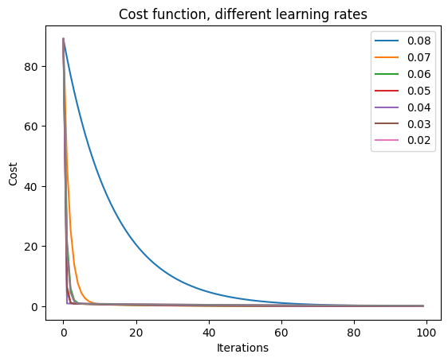
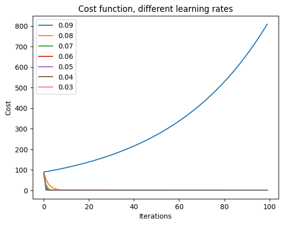

Code - Performance Measurements

As the model types can span incredibly many variants, it is important to know the methods and practices to select the optimal one. There are many mathematical tools and metrics that help us this one of the most important step in model training process, for example: accuracy, recall, precision, ROC (Receiver Operating Characteristic), AUC (Area Under the Curve), and F1-score. Some of their use cases exceed merely the Machine Learning / Data Science field reaching engineering, medicine, sociology, psychology, and much more.
See the code with commentary and outcomes.
In this formative activity we were tasked with analysing how changing different parameters of the model impacts on AUC and R2 error.
This situation can be practically depicted as a ball bouncing down the slope with a step long enough to overcome the local minimum and travel back up. By extending the step length, this way we quickly get out of stability.
